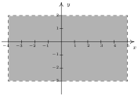
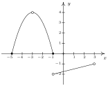

Fundamentos: Relações e Funções
3 Introdução à Funções
Resumo do capítulo
Uma função é uma relação especial, em que cada elemento do domínio está associado a exatamente um elemento da imagem. O capítulo apresenta o teste da reta vertical para reconhecer funções a partir de gráficos e pratica a determinação do domínio de uma função dada por uma fórmula, uma tabela ou um gráfico.
- Função
domínio = \{$-3$, $-2$, $-1$, $0$, $1$, $2$ ,$3$\}
imagem = \{$0$, $1$, $4$, $9$\} - $\left\{ (-3,0), (1,6), (2, -3), (4,2), (-5,6), (4, -9), (6,2) \right\}$respostaNão é função
- $\left\{ (-3,0), (-7,6), (5,5), (6,4), (4,9), (3,0) \right\}$respostaFunção
domínio = $\left\{ -7, -3, 3, 4, 5, 6 \right\}$
imagem = $\left\{ 0,4,5,6,9 \right\}$ - $\left\{ (1,2), (4,4), (9,6), (16,8), (25,10), (36, 12), \ldots \right\}$respostaFunção
domínio = $\left\{ 1, 4, 9, 16, 25, 36, \ldots \right\} \\ = \left\{ x \, | \, \text{$x$ é um quadrado perfeito} \right\}$
imagem = $\left\{ 2, 4, 6, 8, 10, 12, \ldots \right\} \\ = \left\{ y \, | \, \text{$y$ é um inteiro positivo par} \right\}$ - \{($x, y) \, | \, x$ é um inteiro ímpar e $y$ é um inteiro par\}respostaNão é função
- \{$(x, 1) \, | \, x$ é um número irracional\}respostaFunção
domínio = \{$x$ \, | \, $x$ é irracional\}
imagem = \{$1$\} - \{$(1, 0)$, $\;(2, 1)$, $\;(4, 2)$, $\;(8, 3)$, $\;(16, 4)$, $\;(32, 5), \;$ …\}respostaFunção
domínio = \{$x$ \, | \, $x = 2^{n}$ para algum número inteiro $n$\}
imagem = \{$y$ \, | \, $y$ é um número inteiro qualquer \} - \{$\ldots, \; (-3, 9)$, $\;(-2, 4)$, $\;(-1, 1)$, $\;(0, 0)$, $\;(1, 1)$, $\;(2, 4)$, $\;(3, 9), \;$ …\}respostaFunção
domínio = \{$x$ \, | \, $x$ é um inteiro qualquer\}
imagem = \{$y$ \, | \, $y = n^{2}$ para algum inteiro $n$\} - $\{ (-2, y) \, | \, -3 < y < 4\}$respostaNão é função
- $\{ (x,3) \, | \, -2 \leq x < 4\}$respostaFunção
domínio = $[-2, 4)$, imagem = \{$3$\} - $\{ \left(x,x^2\right) \, | \, \text{$x$ é um número real} \}$respostaFunção
domínio = $(-\infty, \infty)$
imagem = $[0,\infty)$ - Não é função
- Função
domínio = \{$-4$, $-3$, $-2$, $-1$, $0$, $1$\}
imagem = \{$-1$, $0$, $1$, $2$, $3$, $4$\} - $~$respostaNão é função
- $~$respostaFunção
domínio = $(-\infty, \infty)$
imagem = $[1, \infty)$ - $~$respostaNão é função
- $~$respostaFunção
domínio = $[2, \infty)$
imagem = $[0, \infty)$ - $~$respostaFunção
domínio = $(-\infty, \infty)$
imagem = $(0, 4]$ - $~$resposta

Não é função - $~$resposta

Função
domínio = $[-5,-3) \cup(-3, 3)$
imagem = $(-2, -1) \cup [0, 4)$ - $~$respostaFunção
domínio = $[-2, \infty)$
imagem = $[-3, \infty)$ - $~$respostaNão é função
- $~$respostaFunção
domínio = $[-5,4)$
imagem = $[-4,4)$ - $~$respostaFunção
domínio = $[0,3) \cup (3,6]$
imagem = $(-4,-1] \cup [0,4]$ - $~$respostaFunção
domínio = $(-\infty, \infty)$
imagem = $(-\infty, 4]$ - $~$respostaFunção
domínio = $(-\infty, \infty)$
imagem = $(-\infty, 4]$ - $~$respostaFunção
domínio = $[-2, \infty)$
imagem = $(-\infty, 3]$ - $~$respostaFunção
domínio = $(-\infty, \infty)$
imagem = $(-\infty, \infty)$ - $~$respostaFunção
domínio = $(-\infty, 0] \cup (1, \infty)$
imagem = $(-\infty, 1] \cup \{ 2\}$ - $~$respostaFunção
domínio = $[-3,3]$
imagem = $[-2,2]$ - $~$respostaNão é função
- Função
domínio = $(-\infty, \infty)$
imagem = $\{2\}$ - Função
- $y = \sqrt{x - 2}$respostaFunção
- $x^{3}y = -4$respostaFunção
- $x^{2} - y^{2} = 1$respostaNão é função
- $y = \dfrac{x}{x^{2} - 9}$respostaFunção
- $x = -6$respostaNão é função
- $x = y^2 + 4$respostaNão é função
- $y = x^2 + 4$respostaFunção
- $x^2 + y^2 = 4$respostaNão é função
- $y = \sqrt{4-x^2}$respostaFunção
- $x^2 - y^2 = 4$respostaNão é função
- $x^3 + y^3 = 4$respostaFunção
- $2x + 3y = 4$respostaFunção
- $2xy = 4$respostaFunção
- Não é função
- Explique porque a população $P$ de mapinguaris em uma dada área é uma função do tempo $t$. Qual a imagem dessa função?
- Explique porque a relação entre seus colegas e seus endereços de email pode não ser uma função. E se trocarmos email por CPF?
- $x^{4} = x^{2} + y^{2}$
- $y^{2} = x^{3} + 3x^{2}$